Capstone
Monitoring Construction Impacts on Wildlife at Fort Ord Dunes State Park
Teresa Alvarez, Raiden Attebury, Sierra Berezay, Ryan Rahman, Sierra Rieken, Aiden Roach, Venus Strollo
Background
History of Fort Ord
In 1917, the United States government purchased 15,000 acres of land in the Monterey County area, including the region known as Fort Ord (California State Parks 2014). However, it wasn’t until the late 1930s that the government officially expanded their military territory and housed around 50,000 soldiers in Monterey County (Krenzelok 2014). Fort Ord became a central training base between 1947 and 1973, training more than 1.5 million soldiers during the Vietnam and Korean War (California State Parks 2014). After continual expansion, the base was officially decommissioned in 1991, forcing soldiers to be relocated in Washington State (Fort Ord Cleanup n.d). In 2009, California State Parks was granted just under 780 acres of land from the United States Army. This exchange resulted in the acquisition of land with lead contaminated soil, as well as 719,000 rounds of ammunition that have been found, collected and disposed of by the U.S. Army (California State Parks 2014).
While Fort Ord is commonly recognized by the public as having a prominent military history, the state park is on unceded land of the Ohlone Costanoan Esselen Nation (Beer & Hughes 2025). Further repudiation of the Nation’s history of inhabitants was exhibited by their exclusion from the Congressional Homeless California Indian Appropriation Acts in the early 1900s, resulting in no lands being bought to house their people (Ohlone Costanoan Esselen Nation n.d.). Additionally, state and federal records mentioning the Ohlone Costanoan Esselen Nation were inconsistent and referenced them by a variety of names; this led to the declaration of their extinction in 1925 (Beer & Hughes 2025). Despite the proclamation of the Nation’s extinction, the Nation has continued to appeal for the status of recognition as an American Indian Tribe following the disbandment of the Fort Ord military base in 1992 (Laverty 2010).
Ecology of Fort Ord
The Fort Ord Dunes State Park has a distinct maritime chaparral ecosystem, inhabited by a diverse range of organisms due to its shifting sands, little soil concentration, and ever-changing temperature and water availability (Beaches & Dunes 2021). Nonetheless, some flora have adapted to thrive in this environment, consequently creating unique habitats. The natural terrain of Fort Ord Dunes State Park is dominated by coastal strand and dune scrub communities, which include a variety of native plant species such as manzanita (Arctostaphylos spp.) and Ceanothus (Ceanothus spp.), in addition to coyote brush (Baccharis pilularis), black sage (Salvia mellifera), mock heather (Ericameria ericoides), and many more (Installation- Wide Multispecies Habitat Management Plan for Former Fort Ord, California 1997). Due to the unique abiotic factors, these dunes house a few state (ST) and/or federally (FT) threatened flora, including the Monterey gilia (Gilia tenuiflora arenaria) (ST, FT) and the Monterey spineflower (Chorizanthe pungens var. pungens) (FT). These native plants contribute to the natural state of the dunes ecosystem, which is important for shoreline preservation. However, in the early 1900s, the ice plant (Carpobrotus spp.) was introduced to stop the movement of the dunes and has quickly outcompeted the native flora (Jensen n.d.).
The dunes also continue to house a diverse population of mammals, birds, and herpetofauna. The ecosystem includes a variety of mammals, such as coyotes (Canis latrans), California ground squirrels (Otospermophilus beecheyi), and Gambel’s deer mice (Peromyscus gambelii). In the skies, one might observe a red-tailed hawk (Buteo jamaicensis), turkey vulture (Cathartes aura), or white-crowned sparrow (Zonotrichia leucophrys), along with many other bird species. Furthermore, the extensive shelter created by the flora and woody debris houses a variety of reptiles and amphibians, such as the Western fence lizard (Sceloporus occidentalis), the Northern alligator lizard (Elgaria coerulea), the Gabilan Mountains slender salamander (Batrachoseps gavilanensis), and the Pacific gopher snake (Pituophis catenifer catenifer). Despite the resilience of these species in adapting to this abrasive habitat, they are extremely vulnerable to anthropogenic impacts (Beaches & Dunes, 2021). Fort Ord Dunes is home to California species of special concern such as the black legless lizard (Anniella pulchra nigra), and Monterey ornate shrew (Sorex ornatus salarius), or Federally Endangered species such as Smith’s blue butterfly (Euphilotes enoptes smithi) and Western snowy plover (Charadrius nivosus) (Zander Associates 2001; State and Federally Listed Endangered and Threatened Animal List 2026; State and Federally Listed Endangered and Threatened, and rare plants of California 2026).
Recreation at Fort Ord
In addition to housing native flora and fauna, Fort Ord Dunes State Park and the surrounding Fort Ord recreation area offer many recreational opportunities for both local residents and visitors. The park includes several miles of coastal dunes and undeveloped beach along Monterey Bay where visitors can walk, bike, and enjoy ocean views. A paved recreation trail runs through the park and connects to the Monterey Bay Coastal Recreation Trail, an 18-mile multi-use path used for walking, jogging, cycling, and skating. Trails and paved roads in the park are open to hikers, bicyclists, and leashed dogs, with educational signs providing information about the area’s natural and cultural history (Fort Ord Dunes State Park n.d.). The dunes and shoreline also provide important habitat for shorebirds and other wildlife, making activities such as bird-watching, photography, and nature observation popular. Rules such as keeping dogs off the beach and staying on designated paths help protect sensitive habitats and species (Fort Ord Dunes State Park n.d.).
Campground Development Project
The current recreation project at Fort Ord Dunes State Park focuses on building a new state park campground and related facilities. This project includes tent and RV sites, hike-and- bike-in campsites, restrooms, showers, a visitor and community building, trail connections, and designated beach access. The main purpose of the campground is to increase public recreation opportunities, especially overnight coastal camping, which is limited and in high demand along Monterey Bay county. The project also aims to improve beach access while protecting fragile dune ecosystems by using designated trails to reduce erosion and habitat damage. In addition, the campground includes educational features that highlight Indigenous history, Fort Ord’s military past, and the importance of the coastal dune environment, helping visitors better understand and respect the area (“Ft. Ord Dunes Campground Project” n.d.).
Recreation and Construction Impacts on Wildlife
Despite these efforts to balance access with protection, outdoor recreation can have mixed effects on natural systems. While recreation can provide benefits for humans, such as economic opportunities and the promotion of conservation values, it can also negatively affect the local ecosystem. A variety of factors contribute to the changing levels of disturbances, including the type of recreational activity, the behavior of recreationists, the frequency of disturbance, and the timing of disturbance (Marion 2019). Major impacts of human disturbance on wildlife include habitat degradation, light pollution, noise pollution, and increased dependence on humans for food, shelter, and protection (Aulsebrook et al. 2020; Berger and Cassidy 2024). However, certain disturbances can be reduced through public outreach; one study completed at Acadia National Park found that educational messaging in the park reduced visitors from going off the designated trails (U.S. Geological Survey 2018). In addition to recreational use, construction is also an invasive process due to the clearing of vegetation and terrain, and is destroying essential habitat for local wildlife (Ferguson 2020). Animals hiding in vegetation, living in burrows, or even under rocks and wood, can all be displaced or even killed during the process of clearing a construction site. The prolonged construction can continue threatening wildlife through light and noise pollution, and heavy machinery or equipment runs the risk of destroying burrows and tunnels inhabited by herpetofauna and small mammals. Birds relying on calls to communicate and find mates can struggle to vocalize over the sounds at construction sites (Ferguson 2020). In addition to these direct disturbances, construction work and road traffic contribute to increased pH and metal contents in the soil (Turek et al. 2022), creating conditions that increase the risk of invasive species introduction, including nonnative vegetation and insects that are incredibly difficult to eradicate once established.
Study Objectives and Monitoring Methods
As construction activity alters habitat conditions and soil characteristics, the establishment of campground infrastructure can further influence wildlife interactions and species composition in the surrounding dunes. In particular, campgrounds can often attract wildlife such as crows and rats that are attracted to leftover food and garbage left behind by humans. Once these generalist species establish populations around these campsites, they often prey on native wildlife (National Park Service 2018). One particular concern at the Fort Ord Dunes is the threat of crows to Western snowy plovers, an endangered species of shorebird that nests in open sand on beaches (U.S. Fish and Wildlife n.d.). Crows and rodents are both known for raiding nests, eating eggs and even chicks (CA State Parks n.d.). Threats also appear in the form of campers unintentionally introducing invasive species (National Park Service 2018). Additionally, trampling from foot traffic can damage dune vegetation, compact soil, and disrupt fragile habitat structure, reducing the ability of these ecosystems to support native species and recover from disturbance. Campgrounds also have a tendency to produce excessive amounts of garbage and litter. This poses the risk of further increasing the amount of plastic, bottles, food packaging, etc. found in the habitat (National Park Service 2018). Given these potential impacts, we aim to monitor wildlife during the campground construction at Fort Ord Dunes State Park. To better understand these disturbances and their effects, both passive and active monitoring methods can be used in the analysis of animal presence. Active sampling may utilize Sherman traps and drift fences to directly interact with organisms, while passive samples may rely on cameras or audio to monitor presence without directly interacting with the organism. When combined, data from both methods can help create a more comprehensive understanding of the relationship between species abundance, richness and human disturbances. To identify how construction impacts native animal populations, we will compare our data to a previous study monitoring animals in the state park, before the start of campground construction. We expect to observe negative impacts on wildlife populations, such as a decrease in species richness, due to the damage caused by construction. Additionally, we expect to see the most impact on wildlife at sites that are near the campground construction, in comparison to the sites that are farther from the construction. Lastly, we expect to see a decrease in wildlife abundance and diversity at the sites closer to campground construction compared to previous data from before the campground construction commenced. This study provides an opportunity to research the effects of construction on local habitats and generate information that can improve management practices in the future.
Methods
For our study, we monitored a total of five sites within Fort Ord Dunes State Park (Table 1). Of the five sites, two sites are close to the campground construction, while the other three are further away, acting as reference sites (Figure 1). Site 1 is an impacted site directly adjacent to construction with restored habitat. Site 1 was recently cleared of invasive iceplant (Carpobrotus spp.) while native coastal strand and dune scrub vegetation has been re-established (Installation - Wide Multispecies Habitat Management Plan for Former Fort Ord, California 1997). Site 2 is another impacted site along a future walking trail but is not a restored area and is currently overrun with poison oak (Toxicodendron diversilobum) and invasive iceplant. Site 3 and Site 4 are reference sites: Site 3 contains lower quality habitat due to close proximity to an old road, while Site 4 contains higher-quality habitat further away from walking trails. Site 5 is not a restored area but serves as a good reference site due to the high-quality habitat and increased distance from the campground construction. The effects of construction at Fort Ord Dunes State Park were examined through an observational field study and used a combination of active and passive sampling methods, including trail cameras, an adapted-Hunt drift fence technique (AHDriFT) system, coverboards, Sherman traps, and acoustic monitoring.
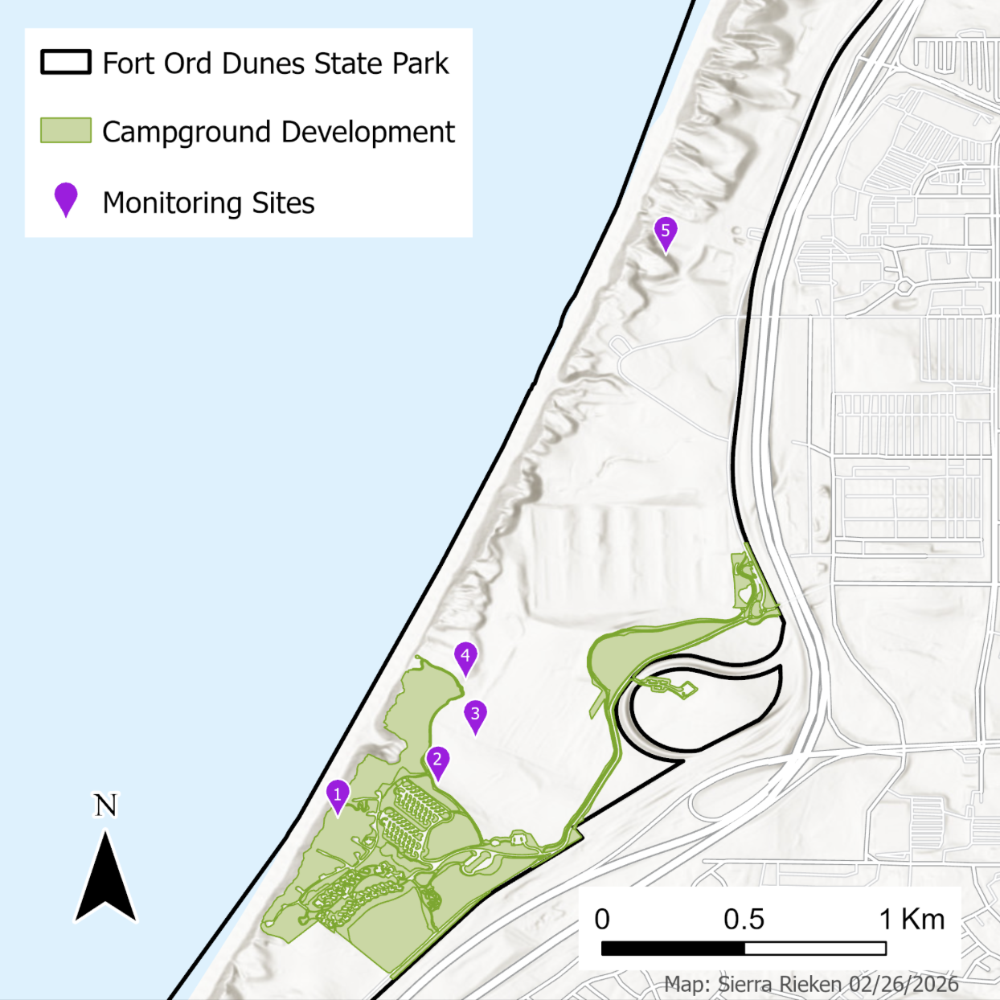
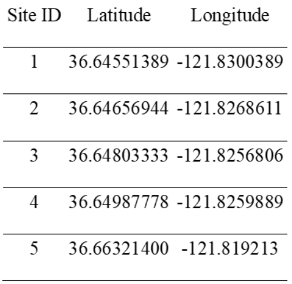
Active Sampling
We used Sherman traps and coverboards to actively sample small mammals and herpetofauna at our sites. Sherman traps are rectangular, non-lethal traps used to bait and capture small mammals (e.g. squirrels, mice, voles), allowing for tagging individuals and estimating population size. Live traps, such as Sherman traps are used to handle, observe, and measure individuals (Vanek et al. 2021). They are commonly recommended for trapping small mammals as they have reduced mortality rates when compared to other common trapping methods (Mactinger & Williams 2020). We set up Sherman traps in 3x3 meter grids at each site, using the north facing point of the AHDriFT traps as reference (Figure 2). Coverboards are a useful method for sampling herpetofauna, especially given their simplicity. They often consist of a sheet of plywood or metal on the ground that helps provide refuge for small animals. This exposes them to researchers when the board is lifted, allowing for capture and measurement of individuals (Grant et al. 1992). One coverboard was placed at each site in open areas, allowing reptiles, amphibians, insects, and other small organisms to find cover away from plant cover or burrows (Figure 2).
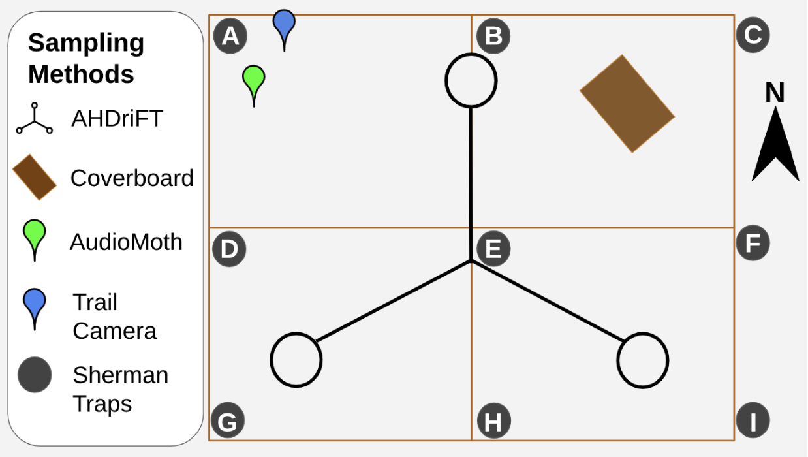
We conducted three monitoring sessions from February to April 2026, each consisting of three days of trapping. The evening before we checked traps, we set up nine Sherman traps at each of the five sites, placing sunflower seeds around and inside the traps as bait (Figure 2). The following mornings, we checked all traps for any captured animals. When a capture was confirmed, the animal was transferred from the trap to a plastic bag and weighed in grams with a Pesola scale. The majority of our captures were rodents that were held by the scruff of the neck with a gloved hand to determine their sex and reproductive status (Queen’s University 2013). Before being released safely near their captured area, each rodent was ear tagged with a numbered metal tag (Roughan 2019; Johns Hopkins University Animal Care and Use Committee 2021). Coverboards, which are large pieces of wood placed for small animals to hide under, were also checked alongside the Sherman traps. After a rapid examination of the uncovered area, herpetofauna were gently handled with gloves to identify the species, determine the sex, and measure the snout-to-vent length (SVL) in mm. For captured reptiles, a small spot of bright nail polish was used to mark the individual (Ferner 2007). After all data was recorded, the herpetofauna were safely released near the area of capture.
Passive Sampling
We used three passive sampling methods: trail cameras, AudioMoth acoustic loggers, and an AHDriFT camera system (Figure 2). At each site, a trail camera and an AudioMoth logger were stationed to record activity. The adapted-Hunt drift fence technique (AHDriFT) system used drift fences to funnel animals towards the end of the fence, where each of three arms leads to a ten-gallon bucket turned upside down with an opening made to allow small mammals and herpetofauna to enter the bucket (Figure 2; Amber et al. 2021; Martin et al. 2017). When an animal enters the bucket, a camera attached to the ceiling of the bucket triggers and provides a birds-eye view of the individual (Porter and Dueser 2024; Amber et al. 2021). Trail cameras were set up in specific locations at each site to capture images of larger animals that could not be captured in Sherman or AHDriFT traps. The AudioMoth logger is a small device that records detected bird calls and activity at each site, which we programmed to fit our requirements (Hill et al. 2018). For this study, the AudioMoth recorded for 2 hours before and after dawn and dusk.
Analysis Methods
Using data we collected from the Sherman traps and coverboards during all three trapping sessions, we calculated three metrics for estimating small mammal abundance across sites. Comparisons between sites assumed that sampling effort was consistent across all locations, including the number of traps, cameras, and survey duration, and that detection probability was similar among sites. However, these assumptions were not fully met, as variation in trap success, camera placement, and habitat structure likely influenced detectability. All individuals were assumed to be correctly identified, but despite AI-assisted identification and manual verification, some misclassifications or missed detections may have occurred. First, we calculated the minimum known number alive (MKNA) for small mammals. MKNA is considered beneficial because it can serve as a strong indicator for abundance, particularly how that abundance changes over time (Bright Ross et al. 2022). We calculated the minimum known number alive (MKNA) as the number of unique individuals captured, excluding recaptures, and assumed closed populations and equal capture probability. These assumptions may have been violated due to animal movement and behavioral differences, so MKNA reflects relative rather than absolute abundance (Bright Ross et al. 2022).
Second, we used the Schnabel Index to estimate population size for each small mammal and herpetofauna species over the course of our three monitoring sessions (see below):
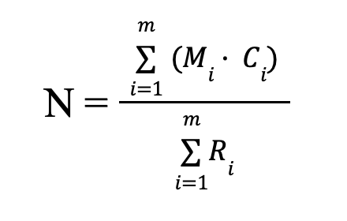
Where Mi is equal to the number of marked animals at time i, Ci equals the number captured at time i, and Ri equals the number recaptured at time i. The Schnabel index assumes a closed population, meaning no immigration, emigration, births, or deaths occur during the sampling period (Kunakh 2023). This assumption may have been violated in our study due to the monitoring schedule, which allowed for animal movement and births or deaths between sampling events. The index also assumes that marks are not lost and that all individuals are correctly identified, however, marks may have been lost if individuals removed ear tags or if applied paint wore off over time. Marking loss can cause previously marked individuals to be recorded as new captures, reducing the number of observed recaptures and leading to an overestimation of population size.
Finally, we calculated the Shannon diversity index for mammals and herpetofauna at each site. The Shannon diversity index (H′) was used to measure diversity by incorporating species richness and evenness:
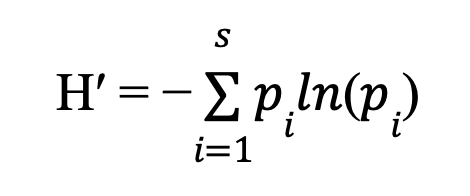
where s is the species richness, pi equals the proportion of total individuals that belong to species i (Kunach 2023). We used the Shannon diversity index because of its robustness to issues such as small sample size (Kunakh et al. 2023). The number of unique individuals captured was also reported as supplemental information to the results of the Schnabel calculations. Additionally, we calculated species richness of mammals, birds, and herpetofauna using the camera and audio logger data, however, individual animals could not be identified for Shannon diversity index calculations. This index assumes representative sampling and equal detectability among species; incomplete detection and small sample sizes may therefore bias estimates (Kunakh et al., 2023). For camera data, individuals could sometimes be visually identified, though errors may occur due to image quality or partial views. In contrast, audio data relied on acoustic detections without visual confirmation, increasing the potential for misidentification from overlapping calls or background noise. Despite manual verification, some identification errors could have occurred. After data collection, we conducted data cleaning using the tidyverse package in RStudio (Wickham 2019). We calculated the Schnabel Index and the number of unique individuals for each site using Microsoft Excel. We then calculated the Shannon diversity index and species richness at each site using the vegan package in R (Oksanen 2025). We processed trail camera data using “Wildlife Insights” which utilizes A.I. to identify species in photographs as well as filter out photos that do not contain an animal. The A.I. model used by Wildlife Insights is able to identify 94% of blank images and predicts the taxon level with 91% accuracy (Wildlife Insights n.d.). Bucket camera data was processed using “TimeLapse,” which does not utilize an A.I. to filter pictures, so we had to manually go through every photo to identify any wildlife that was photographed. We processed AudioMoth data using “BirdNet” which utilizes A.I. to identify species of birds from recorded audio files. The model is trained using citizen science data, so the accuracy is dependent on the number of people in an area contributing information. The majority of citizens providing data to BirdNet are in North America, so we anticipated a high accuracy for identification (FAQ — BirdNET-Analyzer documentation 2026). After both A.I. models performed the initial review of data, we completed a second review manually to confirm the species identification.
Results
Active Sampling
The tagged species throughout our active sampling period included the Gambel’s deer mouse, the Western harvest mouse (Reithrodontomys megalotis), the Western fence lizard, the California vole (Microtus californicus), and the California ground squirrel (Table 2). The small mammals were captured using Sherman traps and the herptiles were captured using coverboards. Any animals captured that were not rodents were released without tagging. Sites 1 & 4 had the highest number of rodent species, with four species captured (reference Table 2). Whereas Site 2 was the least rich, with only one rodent species. Gambel’s deer mouse was the most frequently captured species among all 5 sites (Table 2). The Schnabel Index calculations suggest a larger population than just the captured unique individuals. However, there are some inconsistencies with the Schnabel Index due to a lack of recaptures at some sites, resulting in a population estimate of zero. The Schnabel Index estimated a population of 0 individuals for the Western harvest mouse and the California ground squirrel for sites where there were no recaptures; in these cases, we refer to the MKNA for population estimates (Table 2). However, the Minimum Known Number Alive (MKNA) estimates for Gambel’s deer mouse are much smaller than the total number of unique individuals captured at each site (Table 2). For all other observed species, MKNA were equal to or close to the total unique individuals for each site. Population estimates varied across sites and between the two indices (MKNA and Schnabel). The Schnabel method produced higher population estimates than MNKA at most sites. Sites 1 and 5 consistently showed the highest population sizes across both indices, while Site 3 had the lowest estimates (Figure 3). Across all sites, the Gambel’s deer mouse was the most abundant, contributing to the largest proportion of individuals. The Western harvest mouse and California vole were present in moderate numbers, while the California mouse was observed less frequently (Figure 3). Species composition differed slightly among sites. Site 4 showed relatively higher contributions of California voles compared to other sites, while Site 2 and 3 had lower overall abundance and fewer species represented (Figure 3). Overall, both indices showed similar patterns in species distribution and site differences, but Schnabel Index estimates were consistently larger, indicating higher population size estimates when accounting for recaptures (Figure 3).
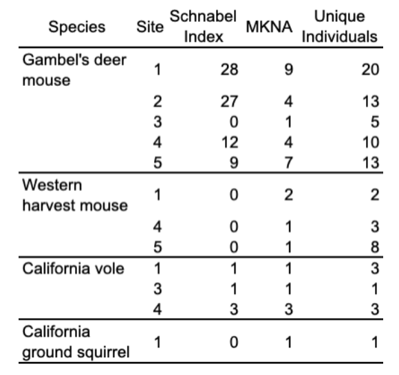
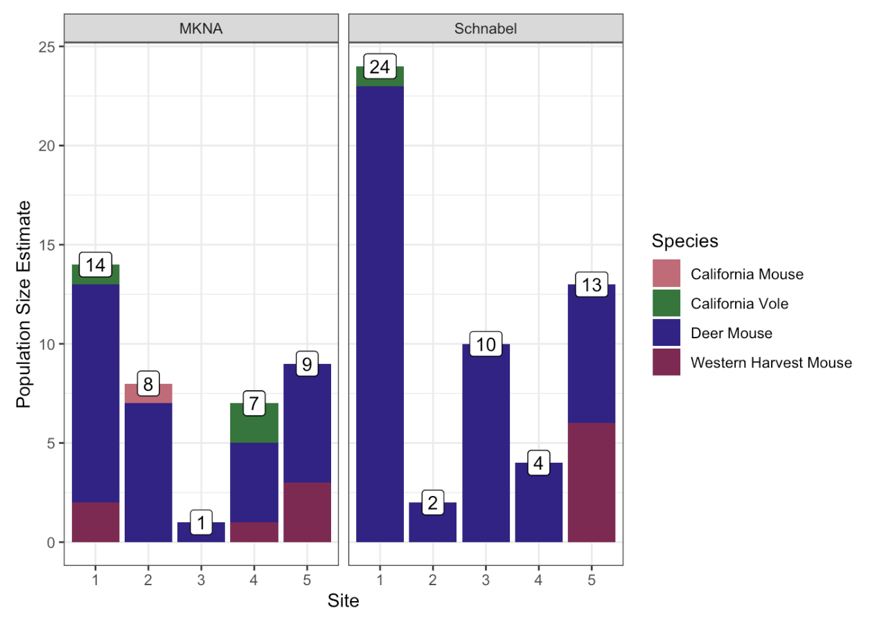
The number of animals captured during our active sampling sessions varied across each site, with Site 1 having the highest total of live captures and Site 3 having the lowest (Figure 4). Sites 2, 4, and 5 had comparable numbers of captures, with Site 5 having the highest. (Figure 4). Across all sites, species composition was dominated by small mammals, particularly Gambel’s deer mice, which were the most frequently captured at each site. Western harvest mice and California voles were also commonly captured, though in lower numbers. Additional species, including California mice, brush rabbits, California ground squirrels, gopher snakes, Northern alligator lizards and Western fence lizards were detected but occurred at relatively low frequencies (Figure 4). Reptiles and larger mammals contributed minimally to total captures and were primarily observed at a few sites rather than constantly across all locations.
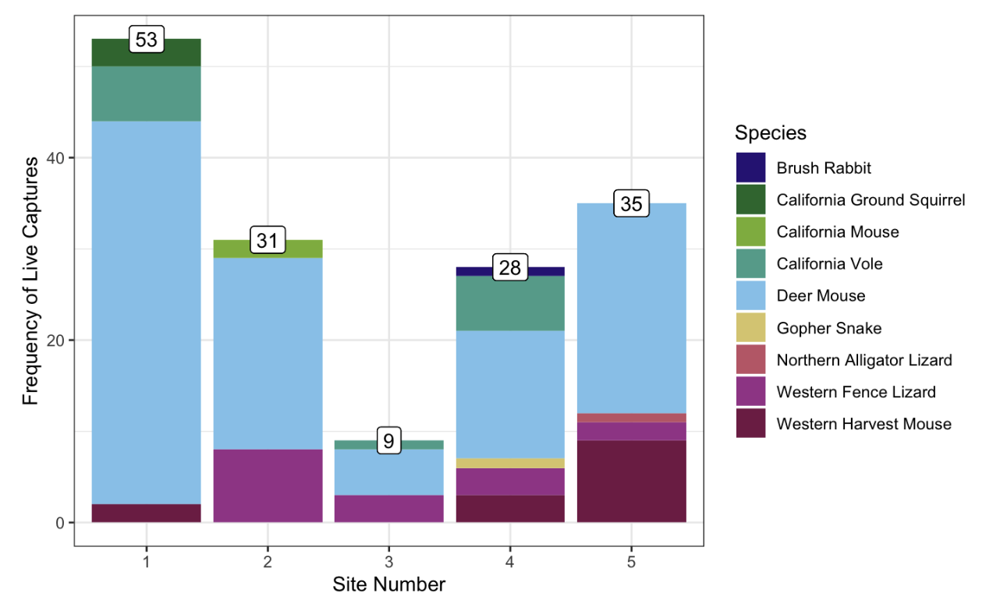
Shannon diversity index values varied across the five sampling sites. Site 4 exhibited the highest diversity (~1.18), followed by Site 5 (~0.93) (Figure 5). Site 3 showed moderate diversity (~0.68), while Sites 1 and 2 had the lowest and nearly identical values (~0.57) (Figure 5). Overall, diversity values varied per site, indicating differences in species richness and evenness among sites.
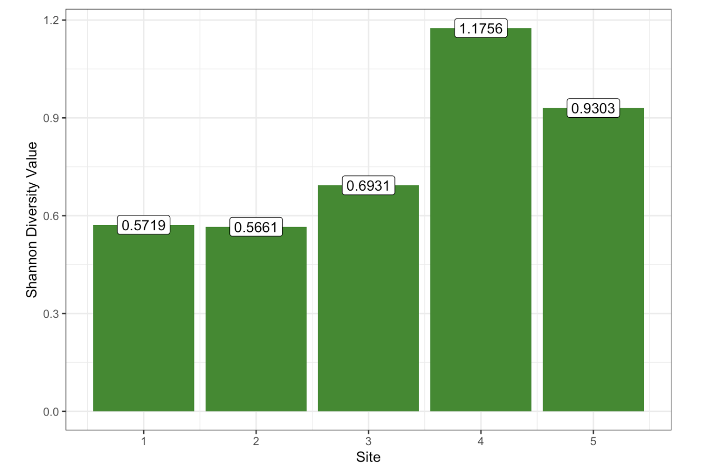
Passive Sampling
Camera Detections
The installation of the trailcameras and AHDriFT camera system permitted the passive observation of larger mammals, birds, and herpetofauna. Cameras at sites 1 and 5 had the highest number of wildlife detections compared to any other site, with approximately 582 and 480 observations respectively (Figure 6). Across all sites, small mammals were detected the most frequently, followed by reptiles (Figure 6). Birds, large mammals, and amphibians were the least observed groups across the five sites, however, amphibians were detected most frequently at Site 3 (Figure 6).
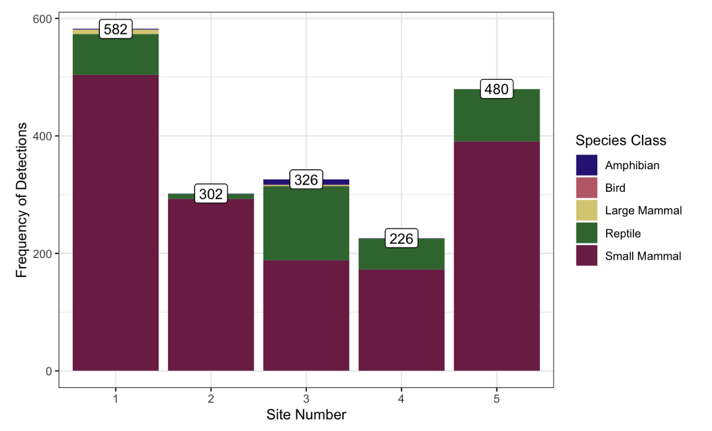
Based on the combined trail and AHDriFT camera observations, the species richness was highest in Site 1 at 20 and Site 3 16, while the lowest was in Site 5 at 11 (Figure 7). Both Site 2 and Site 4 both had a species richness of 12 (Figure 7). In addition to having the highest species richness, a Monterey ornate shrew, a California species of special concern, was observed using the AHDriFT camera system and was detected at Site 1.
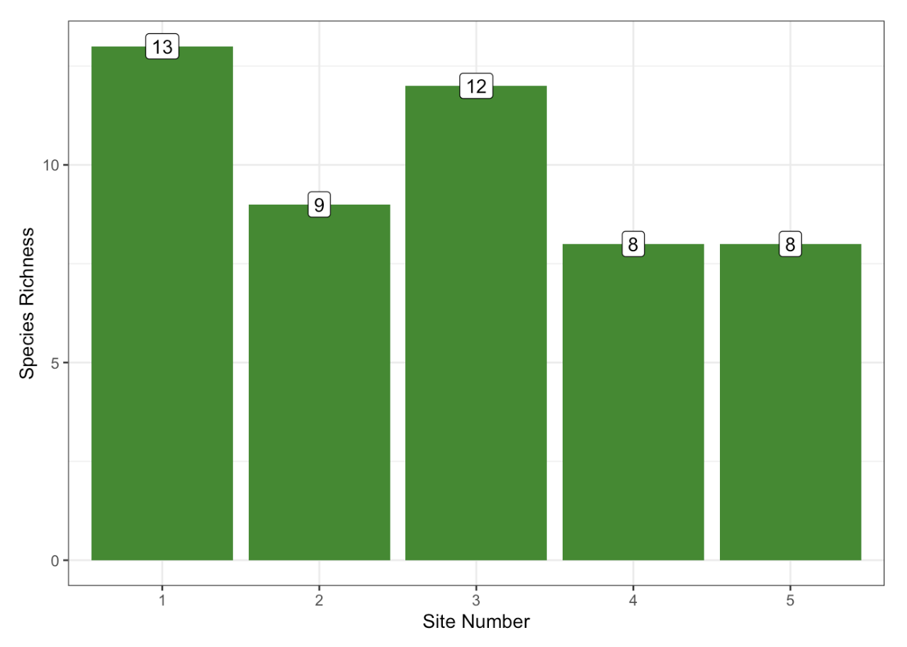
Audiomoth Detections
We analyzed audio data from the AudioMoth acoustic loggers during a 7-day sampling period overlapping with our first monitoring session in February. Due to battery issues with the AudioMoth loggers, we were unable to collect audio data during our following monitoring sessions. The highest species richness was 50 at Site 5, with the second highest species richness being approximately 38 at Site 3 (Figure 8). The next highest species richness was Site 4 with a species richness of 36 (Figure 8). However, while Site 2 had the lowest species richness, the difference in richness is only 2 when compared with Site 1, the second to last most rich site (Figure 8).
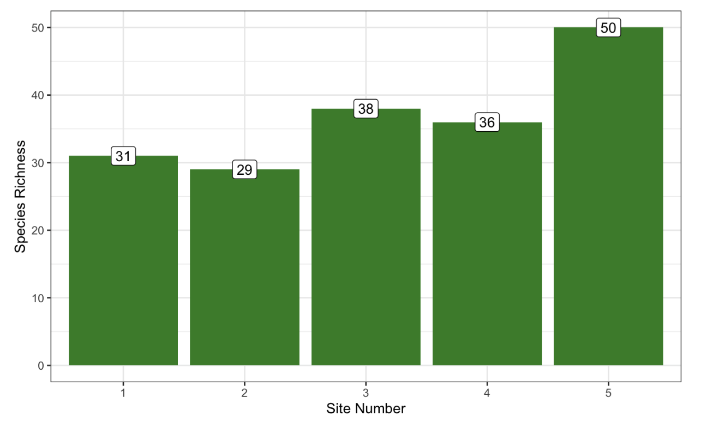
Comparison Across Years
We compared values for the Schnabel Index, MKNA, and Shannon Diversity Index with previous data taken in 2025, before construction commenced (Table 3). It should be noted that Site 5 was only set up in 2026 and was treated as a control site for our experiment, so we cannot compare data at this site. Site 1 had the highest Schnabel Index in both 2025 and 2026, but had the lowest Shannon Index of any site in either year (Table 3). Bird species richness was analyzed separately, but also organized by site totals and year. Site 4 had the highest species richness while Site 5 and 1 had the lowest in 2026 (Table 4). The year prior saw Site 1 with the highest richness and Site 4 had the lowest, however, the richness was more even across the four sites compared to the bigger fluctuations seen this year (Table 4).
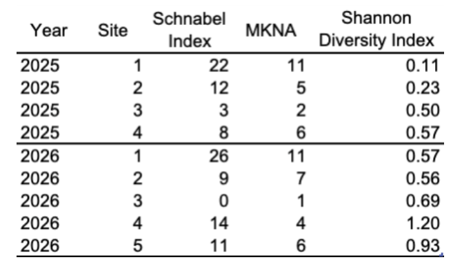
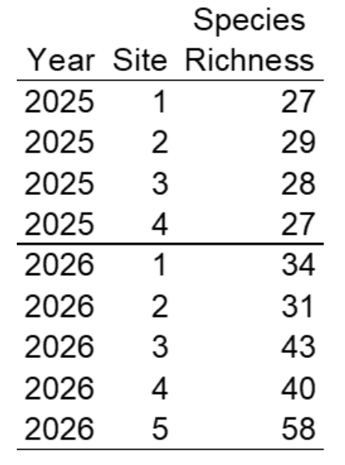
Active sampling between the years varied greatly. In 2025, Gambel’s deer mice counts from Sherman traps was 60 while 2026 counts were 104 (Table 3). California vole counts went from 5 to 13 and Western harvest mice counts went from 1 to 14 (Table 5). The previous year saw only a single Western fence lizard from a coverboard while we found 16, along with a northern alligator lizard and a gopher snake (Table 5). The California mouse and ground squirrel numbers did not differ greatly.
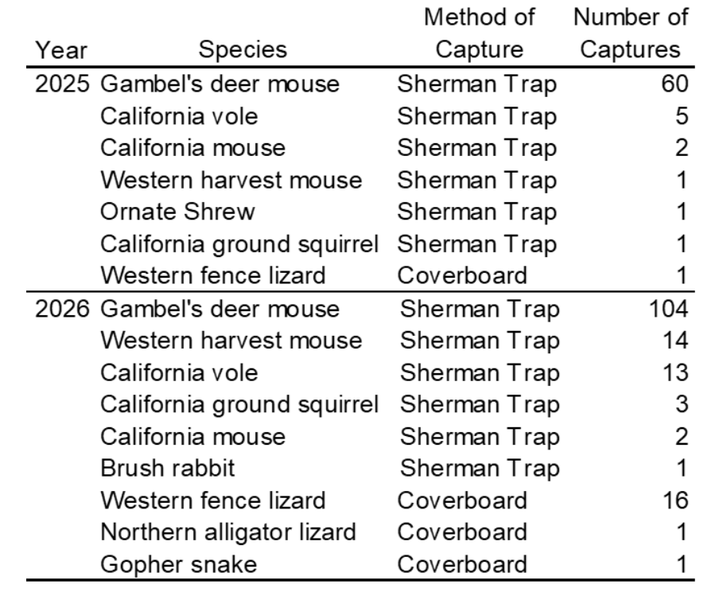
When comparing avian observations between 2025 (pre-construction) and 2026 (active construction), we found an increase in species richness in 2026 across all sites (Figure 9). In 2025, Sites 1-4 had species richness all below 30 (Figure 9). However, in 2026, Sites 1-4, the lowest species richness was 32 at Site 1 and the highest at Site 3 just below 50 (Figure 9). While we did add Site 5 into our monitoring this year, we found that this new location had the highest species richness recorded just below 70 (Figure 9).
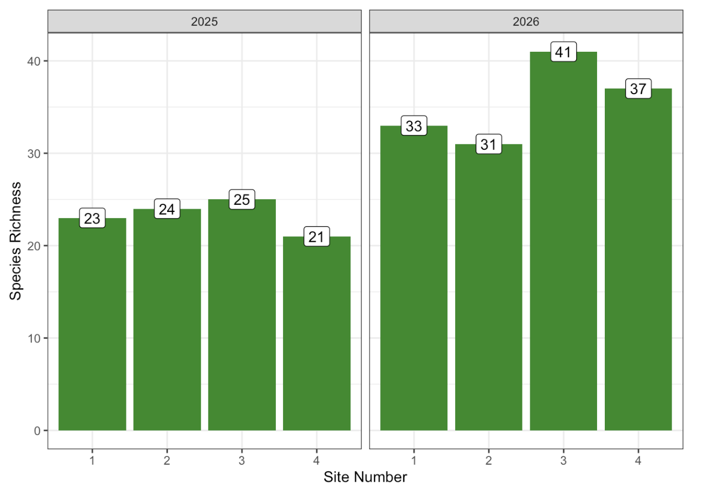
Discussion
Active Sampling
While the data provided by the Schnabel Index and the MKNA have similar trends, showing the highest estimates at sites 1 and 5, the numerical estimates themselves are notably different. The MKNA reports much lower population estimates across sites 1, 2, 4, and 5, while the Schnabel index reports higher population estimates except in site 3, where it reports an estimate of 1. The trend seen across both forms of analyses is likely stemming from a combination of factors relating to each site’s relative vegetation cover, distance to construction, and possibly abundance of resources. A lack of vegetation cover may cause rodents to seek shelter in the sherman traps while crossing open areas. Close proximity to construction may be limiting the movements/ranges of rodents, essentially condensing them around some of our trap sites. It’s also possible that construction in certain areas may be limiting the food resources for certain small mammals, causing them to be more willing to enter traps in search of food. Understanding the relationships between these factors will likely require further study, but they are worth considering now based on the trends in our data. Site 1 is dense with native vegetation, but is within very close proximity to active construction, meaning rodents in the area may be getting compressed to our site or struggling for resources. Site 5 is farthest from the construction, and is one of the better sites in terms of native vegetation abundance, so its high capture rates may simply stem from the site having a large, healthy population. As for the accuracy of the two analyses, it is likely that the Schnabel Index is the more accurate representation of the population size estimates, as the MKNA provides data that is more reliable with abundance estimates rather than population size estimates. It is also worth noting that some of the assumptions of the Schnabel index were broken in our study, as we have no way of knowing whether or not there were any births, deaths, immigrations or emigrations during the one month period between each of our survey sessions.
Across the five sites, the habitat quality and proximity to active construction varies significantly, which is somewhat reflected by our data. Sites 1 and 2 have the lowest Shannon diversity index values, which may be explained by their close proximity to construction sites. While Site 3 is further from construction, it has much less dense vegetation when compared to Sites 1, 4, and 5, providing more suitable habitat for small mammals. Sites 4 and 5 show the highest diversity, both sites are far from the active construction and are densely vegetated with high-quality habitat.
The number of live captures through Sherman traps and coverboards provides a measure of activity rather than abundance. Site 3 had the lowest number of captures, which may be explained by the lack of dense vegetation and proximity to an old road; small mammals at this site may be more vulnerable to predation. However, Site 3 had comparable species richness and wildlife detections when using camera observations, indicating that animals may have been trap-shy rather than absent. Sites 2, 4 and 5 all had very similar capture numbers, which is interesting considering the proximity of site 2 to the construction, as well as how overrun the site is with the invasive iceplant. The rodents found at site 2 may be more desperate for food due to the amount of iceplant in the area, or they might be entering the traps to use them for refuge, considering how little cover the site offers. Site 1 had the highest number of captures by a significant margin, despite being so close to active construction. The site is well restored in terms of iceplant removal and native vegetation, so it may stand to reason that before the construction, the populations of small animals were very healthy in the site, and while they still might be, the construction may be limiting the movements of the small animals living in the area. If this is the case, it’s very possible that the small mammals are struggling to find food, driving them to be more likely to enter our traps that were baited with sesame seeds.
Passive Sampling
Trail Cameras
Conducting passive sampling with our camera systems allowed us to observe a large variety of species that we did not observe through active trapping. Site 1 had the greatest number of wildlife detections and the third highest species richness, likely because it is a recently restored site (Figure 6; Figure 7). While this result was unexpected due to Site 1’s close proximity to construction, the partially topographical seclusion provided by this site may have led to its favorability among certain species. Additionally, this site had an observation of a species of special concern, the Monterey ornate shrew, another indication of possible habitat suitability. Site 5 had the second-highest number of wildlife detections and highest species richness among all five sites (Figure 6; Figure 7). This site contains favorable habitat due to its distance from active construction and the presence of high-quality, dense vegetation (i.e., minimal iceplant). Continuing on site 3, was the third in species detection and the second in species richness (see Figure 6 & Figure 7). Site 3 was not a restored site but was the second furthest from active construction and surrounded by open area. Site 2, the site closest to the construction and unrestored, was the second lowest in detection and was lowest in species richness (see Figure 6 & Figure 7). Finally, site 4 had the lowest detection rate and Second lowest in species richness (see Figure 6 & Figure 7). This site was titled “ideal habitat” due to its lack of ice plant and distance from construction; however, our results tell us that might not be the case. While our camera system did increase our overall observations, there were some unforeseen obstacles. Including bucket cameras tipped over, resulting in hours of unusable footage and vegetation obscuring the camera view or causing the motion reaction to capture blank footage.
AudioMoth
The observed bird population had a significantly greater species richness at Site 5, the site furthest from active construction (refer to Figure 8). The species richness was followed by site 3, an unrestored site, second furthest from construction. Richness continued to decrease in the order of site 4, site 1, and then site 2. This trend coincides with the order of site distance from construction, indicating that construction noise possibly obstructed species detections by the audio loggers. However, half of our audio data was around dusk, when construction was not ongoing. It is possible that the presence of construction during the daytime is driving birds away from sites near construction. Notably, there is no clear correlation between sites restored or unrestored status and avian species richness. However, take into account, due to mechanical and user error we were unsuccessful in collecting audio over multiple sessions.
Comparison
When comparing differences in diversity indices between Spring of 2025 and Spring of 2026, there is some evidence that construction possibly affects wildlife. This is particularly shown by the difference in species richness when using audio data and the difference in Shannon diversity index of small mammals. When looking at Figure X, we see consistent species richness of birds in 2025 across sites yet varying richness of birds in 2026. One possible explanation is that the construction of the campsite produces a significant amount of noise that prevents communication of birds through calls. When looking at Figure X, we see an increase in Shannon diversity of small mammals as site number increases in 2025. Yet in 2026, we see two distinct categories: sites near construction and sites away from construction. While we are not aware of what drove the increase in Shannon diversity in 2025, it is very likely that the beginning of construction caused the change in diversity in 2026 given that diversity increased as sites became further away from construction.
Not every measure of diversity in 2025 and 2026 resulted in evidence that construction affects wildlife. When looking at Figure X and Figure X, we see similar patterns in diversity between 2025 and 2026. Both indices used in estimating the population size of deer mice had a decrease in population size from site one to three before increasing again in 2025 and in 2026. A similar pattern is shown when looking at the frequency of live captures between 2025 and 2026. As mentioned above, a possible explanation for this lack of variation over time could be that the rodent species included in this study have small home ranges and therefore could not leave a site despite construction activity. Additionally, it is possible that it may take more than one year for the construction to start affecting the small mammal populations.
Regardless of if our results were a consequence of construction or not, there are still areas to improve for future studies. Trapping sessions were only three days in length which could have resulted in a sample size too small to detect true patterns in diversity. Additionally, no traditional hypothesis testing was completed in this study. While we conclude there are differences in diversity between Spring 2025 and Spring 2026 due to construction, hypothesis testing would be able to better quantify the differences in diversity. This study has provided a foundation for understanding the impact of construction on wildlife, although future studies have opportunities to improve upon our methods to produce an even more well-rounded result.
References
2019 Annual Natural Resource Monitoring, Mitigation, and Management Report Covering Activities Conducted from 1 January 2019 through 31 December 2019. 2020 Feb. https://docs.fortordcleanup.com/ar_pdfs/AR-ESCA-0382/ESCA-0382.pdf.
Ahumada, Jorge A, Eric Fegraus, Tanya Birch, Nicole Flores, Roland Kays, Timothy G O’Brien, Jonathan Palmer, et al. 2019. Wildlife Insights: A Platform to Maximize the Potential of Camera Trap and Other Passive Sensor Wildlife Data for the Planet. Environmental Conservation 47, 1–6. https://doi.org/10.1017/S0376892919000298.
Alwiz, N.S., Perera, P., Dayawansa. (2016). Response of tropical avifauna to visitor recreational disturbances: a case study from the Sinharaja World Heritage Forest, Sri Lanka. Avian research, 7(15). https://doi.org/10.1186/s40657-016-0050-5
Amber ED, Lipps GJ, Peterman WE. 2021. Evaluation of the AHDriFT Camera Trap System to Survey for Small Mammals and Herpetofauna. Journal of Fish and Wildlife Management. 12(1):197–207. doi:https://doi.org/10.3996/jfwm-20-016.
Aulsebrook LC, Bertram MG, Martin JM, Aulsebrook AE, Brodin T, Evans JP, Hall MD, O’Bryan MK, Pask AJ, Tyler CR, et al. 2020. Reproduction in a polluted world: implications for wildlife. Reproduction. 160(2):R13–R23. doi:https://doi.org/10.1530/rep-20-0154.
Beaches & Dunes. 2021. Montereybayaquariumorg. https://www.montereybayaquarium.org/animals/habitats/beaches-and-dunes.
Beer, C.M & Hughes, S.S. 2025. ‘Fixing’ Settler Capitalism: Un/Sustainability in the Former Fort Ord. Antipode. 1364–1381. doi: 10.1111/anti.70028.
Berger J, Cassidy KA. 2024 Sep 10. Play is a privilege in both humans and animals: how our recreation influences wildlife. Journal of Wildlife Management. doi:https://doi.org/10.1002/jwmg.22664. Bright Ross JG, Newman C, Buesching CD, Macdonald DW. 2022. Preserving identity in capture–mark–recapture studies: increasing the accuracy of minimum number alive (MNA) estimates by incorporating inter-census trapping efficiency variation. Mammalian Biology. 102(3):567–580. doi:https://doi.org/10.1007/s42991-021-00210-6.
California State Parks. Fort Ord Dunes State Park: Monterey Bay Area State Beaches. https://www.parks.ca.gov/pages/576/files/FortOrdDunesMonterey_Web2014.pdf.
California State Parks. Fort Ord Dunes State Park. California State Parks, www.parks.ca.gov/?page_id=580.
California State Parks. Ft. Ord Dunes Campground Project. California State Parks, www.parks.ca.gov/?page_id=28340.
CA State Parks. Snowy Plovers. https://www.parks.ca.gov/?page_id=30020.
Couch R. 2016. SALINAS RIVER STATE BEACH DUNE RESTORATION. https://scc.ca.gov/webmaster/ftp/pdf/sccbb/2016/1605/20160526Board15_SRSB_Dunes_Restoration.pdf.
Eagleston, H. & Marion, J.L. (2017). Sustainable campsite management in protected areas: A study of long-term ecological changes on campsites in the boundary waters canoe area wilderness, Minnesota, USA. Journal for Nature Conservation, 37, 73-82. https://doi.org/10.1016/j.jnc.2017.03.004.
FAQ — BirdNET-Analyzer documentation. 2026. Githubio. [accessed 2026 Feb 26]. https://birdnet-team.github.io/BirdNET-Analyzer/faq.html.
Ferguson C. 2020 Jan 23. How Building a House Impacts Wildlife – Your Connection to Wildlife. Canadian Wildlife Federation Blog. https://blog.cwf-fcf.org/index.php/en/how-building-a-house-impacts-wildlife/. Ferner, JW. 2007. A Review of Marking and Individual Recognition Techniques for Amphibians and Reptiles. Society for the Study of Amphibians and Reptiles. https://ssarherps.org/wp-content/uploads/2023/07/HC-35-Marking-Techniques-2nd-ed.
Fort Ord Cleanup. n.d. “Fort Ord and BRAC History.”
Krenzelok G .2014. The History of Fort Ord 1847-1994. https://www.youtube.com/ watch?v=h3-FFeRv0DE.
Kunakh ОМ, Volkova AM, Tutova GF, Zhukov OV. 2023. Diversity of diversity indices: Which diversity measure is better? Biosystems Diversity. 31(2):131–146. doi:https://doi.org/10.15421/012314.
Grant BW, Tucker AD, Lovich JE, Mills AM, Dixon PM, Gibbons JW. 1992. The Use of Coverboards in Estimating Patterns of Reptile and Amphibian Biodiversity. Wildlife 2001: Populations.:379–403. doi:https://doi.org/10.1007/978-94-011-2868-1_31.
Hill AP, Prince P, Piña Covarrubias E, Doncaster CP, Snaddon JL, Rogers A. 2018. AudioMoth: Evaluation of a smart open acoustic device for monitoring biodiversity and the environment. Isaac N, editor. Methods in Ecology and Evolution. 9(5):1199–1211. doi:https://doi.org/10.1111/2041-210x.12955. https://besjournals.onlinelibrary.wiley.com/doi/full/10.1111/2041-210X.12955.
In-Depth Look: Volunteer Dune Restoration Project at Fort Ord Dunes State Park. Cal Parks. https://www.calparks.org/blog/depth-look-volunteer-dune-restoration-project-fort-ord-dunes-state-park.
Installation- Wide Multispecies Habitat Management Plan for Former For Ord, California . 1997 Apr.https://www2.co.monterey.ca.us/EconomicDevelopment/pdf/Habitat%20Management%20Plan%201997.pdf.
Jensen L. Taking Back the Beach. Sanctuariesnoaagov. https://sanctuaries.noaa.gov/news/feb15/invasive-species.html.
Johns Hopkins University Animal Care and Use Committee. 2021. Ear Tagging of Mice 1. https://animalcare.jhu.edu/wp-content/uploads/sites/5/Ear-Tagging-Mice.pdf.
Jung TS. 2015. Comparative efficacy of Longworth, Sherman, and Ugglan live-traps for capturing small mammals in the Nearctic boreal forest. Mammal Research. 61(1):57–64. doi:https://doi.org/10.1007/s13364-015-0251-z. https://link.springer.com/article/10.1007/s13364-015-0251-z.
Kahl S, Wood CM, Eibl M, Klinck H. 2021. BirdNET: A deep learning solution for avian diversity monitoring. Ecological Informatics. 61:101236. doi:https://doi.org/10.1016/j.ecoinf.2021.101236.
Laverty P. 2010. Recognizing Indians: Place, Identity, History, and the Federal Acknowledgement of the Ohlone/Costanoan-Esselen Nation. Unpublished PhD thesis, University of New Mexico.
Mactinger, ET. & Williams, SC. 2020. Practical Guide to Trapping Peromyscus leucopus (Rodentia: Cricetidae) and Peromyscus maniculatus for Vector and Vector-Borne Pathogen Surveillance and Ecology. National Library of Medicine. 20(6). doi: 10.1093/jisesa/ieaa028
Marion J. 2019. Impacts to Wildlife: Managing Visitors and Resources to Protect Wildlife Prepared for the Interagency Visitor Use Management Council. https://visitorusemanagement.nps.gov/Content/documents/Impacts%20to%20Wildlife_Managaing%20Visitors%20and%20Resources%20to%20Protect%20Wildlife_March%202019_Edition%20One.pdf.
Martin SA, Rautsaw RM, Robb F, Bolt MR, Parkinson CL, Seigel RA. 2017. Set AHDriFT: Applying game cameras to drift fences for surveying herpetofauna and small mammals. Wildlife Society Bulletin. 41(4):804–809. doi:https://doi.org/10.1002/wsb.805.
National Park Service. 2018 Jan 24. Help Protect Wildlife, Your Food, and Your Neighbors–Don’t Feed the Bears! - Sleeping Bear Dunes National Lakeshore (U.S. National Park Service). https://www.nps.gov/slbe/learn/nature/do-not-feed-the-bears.htm.
Ohlone Costanoan Esselen Nation Official Tribal Website. n.d. “Ohlone/Costanoan Esselen Indians of the Greater Monterey Bay Area.” https://www.ohlonecostanoanesselennation.org/index.html.
Oksanen J, Simpson G, Blanchet F, et al. (2026). vegan: Community Ecology Package. R package version 2.8-0
Porter JH, Dueser RD. 2024 Apr 5. A Low‐Cost Small‐Mammal Camera Trap for Research and Education. Bulletin of the Ecological Society of America. doi:https://doi.org/10.1002/bes2.2142.
Programs: National Conservation Lands: California: Fort Ord National Monument: People and Culture | Bureau of Land Management. 2021. Bureau of Land Management. https://www.blm.gov/programs/national-conservation-lands/california/fort-ord/people-and-culture.
Queen’s University. 2013. SOP 7.20- Manual Restraint of Mice. Queen’s University Animal Care Committee Standard Operating Procedure. https://www.queensu.ca/animals-in-science/policies-procedures/sop/mice/7-20.
Roughan JV, Sevenoaks, T. 2019. Welfare and scientific considerations of tattooing and ear tagging for mouse identification. JAALAS 58:142-153
State and Federally Listed Endangered and Threatened Animals of California. 2026 Feb 2. California State Portal. STATE AND FEDERALLY LISTED ENDANGERED, THREATENED, AND RARE PLANTS OF CALIFORNIA. 2026 Jan. California State Portal.
Turek, A., Wieczorek, K., Szczesio, M., Kubicki, J. (2022). Protected areas vs. highway construction - problem of environmental pollution. Minerals, 12(7), 838. https://doi.org/10.3390/min12070838.
U.S. Fish and Wildlife Service. (n.d.). western snowy plover (Charadrius nivosus nivosus). ECOS. https://ecos.fws.gov/ecp/species/8035
U.S. Geological Survey. 2018 Jun 21. Leave No Trace this Summer as You Explore the Outdoors.https://www.usgs.gov/news/featured-story/leave-no-trace-summer-you-explore-outdoors.
Vanek JP, Preuss TS, Rutter AU, Jones HP, Glowacki GA. 2021. Using Long‐Term Data to Compare Two Sizes of Sherman Trap. Wildlife Society Bulletin. 45(4):574–580. doi:https://doi.org/10.1002/wsb.1221.
Wickham H, Averick M, Bryan J, Chang W, McGowan LD, François R, Grolemund G, Hayes A, Henry L, Hester J, Kuhn M, Pedersen TL, Miller E, Bache SM, Müller K, Ooms J, Robinson D, Seidel DP, Spinu V, Takahashi K, Vaughan D, Wilke C, Woo K, Yutani H (2019). “Welcome to the tidyverse.” Journal of Open Source Software, 4(43), 1686. doi:10.21105/joss.01686 https://doi.org/10.21105/joss.01686.
Wildlife Insights. About Wildlife Insights AI | Wildlife Insights. www.wildlifeinsights.org. https://www.wildlifeinsights.org/about-wildlife-insights-ai.
Zander Associates . 2001. BIOLOGICAL RESOURCES OF THE DEL MONTE FOREST SPECIAL-STATUS SPECIES. https://www2.co.monterey.ca.us/planning/docs/eirs/pbc/feir/pdfs-text/feir_appf/f-1/3-mrmp_appa3_species_zander_01.pdf